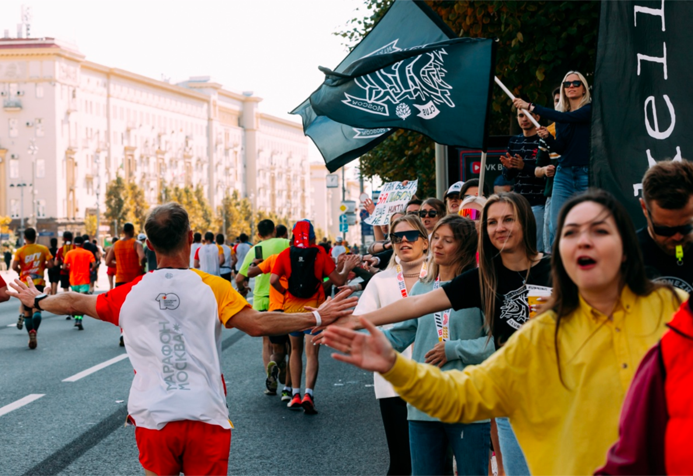
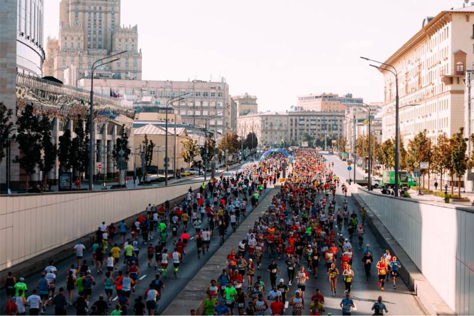
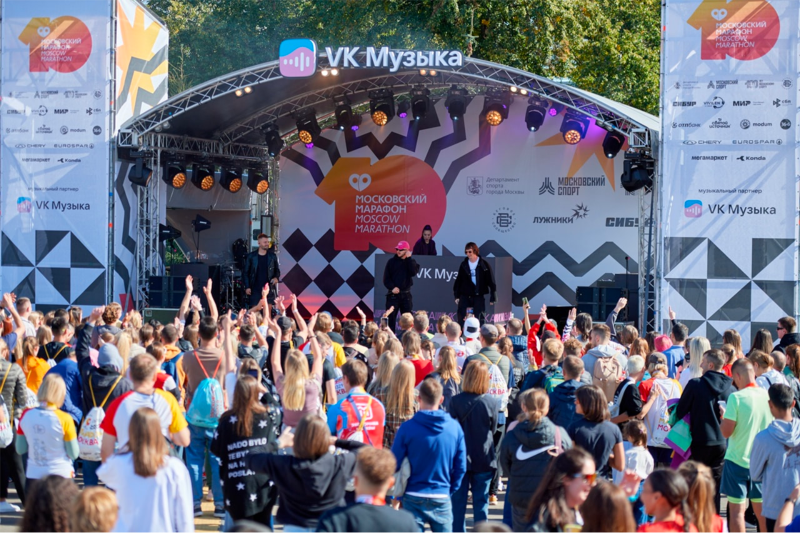

Московский Марафон 2024 пройдет в Москве 26-29 сентября29 апреля 2024
#легкая_атлетика #массовый_спорт #беговое_сообществоМосковский марафон 2024 года станет одним из самых ожидаемых и захватывающих событий в мире спорта. Мероприятие, которое проводится уже несколько десятилетий, объединяет спортсменов со всего мира и является символом стойкости, выносливости и силы духа.

В этом году Московский марафон пройдет 29 сентября и обещает быть еще более масштабным и ярким. Организаторы мероприятия обещают создать уникальную атмосферу праздника для всех участников и зрителей. Ожидается, что в марафоне примут участие тысячи спортсменов из разных стран, а также огромное количество болельщиков и зрителей.

Главное событие марафона – это, конечно же, забеги на разные дистанции. Участники смогут пробежать 42 км, 21 км, 10 км и даже 3 км. Для участников также предусмотрены забеги для людей с ограниченными возможностями.
Кроме того, организаторы обещают интересную программу для зрителей и участников. На марафоне будут проводиться различные мастер-классы, выставки, концерты и другие мероприятия. Также будет работать зона отдыха с кафе, где участники смогут отдохнуть и подкрепиться после забега.

Не обойдется и без звездных гостей. В этом году на марафоне ожидается множество знаменитостей, которые будут поддерживать участников и развлекать зрителей. Среди них – известные спортсмены, актеры, певцы и другие знаменитости.